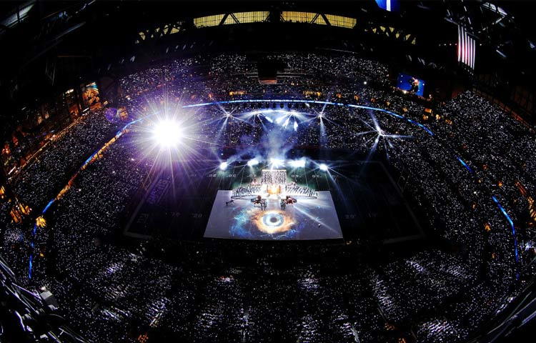

除夕有香喷喷的饺子，有浓到化不开的团圆情谊，有噼啪作响的鞭炮，有守岁必备的春晚……一家人吃完年夜饭，准备好各种坚果、零食，围着电视看春晚，边笑边吐槽，好一个其乐融融的团圆夜！此时此刻，和我们隔了山又隔水的美国是什么景象呢？冷清？看我们的春晚？都不是！人家也有一场不亚于春晚的狂欢节目呢——超级碗星期天！
超级碗是美国国家美式足球联盟的年度冠军赛，胜者被称为世界冠军。单纯从体育的角度说，超级碗是美国职业橄榄球的总决赛。这个“碗”其实是个能容纳8-9万人的体育场。
橄榄球的电视可看性非常高，进攻方有4次球权，只要能推进10码就可以重新获得4次球权。这样节奏不停地在变化，得分以外的小高潮不断出现。再加上现在的互联网技术，几码的线在哪里电视上都能清晰的标示出来，观众看起来非常的方便。一场球赛的时间大概是3个多小时，整个比赛攻防分明，所以对球迷的注意力要求不是那么的高，完全不需要一直盯着看，也不需要太高的智商，观众可以边喝啤边酒聊天
“聚众”看超级碗的人越来越多，渐渐的这一体育赛事竟然演化成了美国最大的party。那么这个party大到什么程度呢？数据来告诉你——全美国会有约1亿人会观看电视转播，这场体育赛事打造出了美国收视率最高的一个节目。这一天的美国，基本上是万人空巷，大家都聚在各种party上看球，80%-90%的人至少会看一段时间的转播。各种食物疯狂告罄，据说一个周末会有12.5亿只鸡腿、3千万磅小吃被消耗掉，另外party的“宠儿”啤酒销售额会达到108亿美金！
电视上除了球赛以外，还有2个绝对令人瞩目的内容——一个是中场的音乐会，另一个就是插播的广告节目。中场的音乐会是美国当之无愧的最大的音乐会，收视观众是其坚不可摧的强大后盾。音乐会嘉宾都是万众瞩目的超级大牌，凯蒂·佩里、碧昂斯甚至之前的杰克逊等大牌都曾出场。这个收视率最高的单场节目广告费也是极高的，支付的起高昂广告费的广告主也都是些大牌产品，因此广告也是一百二十分的精彩。超级碗节目中的广告成了许多伪球迷的主要看点，甚至成为了观众唯一主动期盼广告的节目。
1、2月份的第一个星期天是美国的超级碗星期天，这场橄榄球比赛造就了美国收视率最高的电视节目；
2、关注节日说的盆友们新年快乐，管它什么超级碗呢，赶快填饱肚子看春晚去！